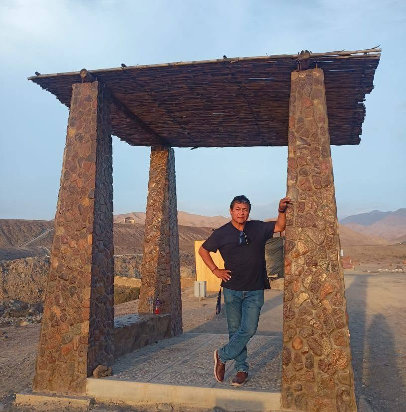
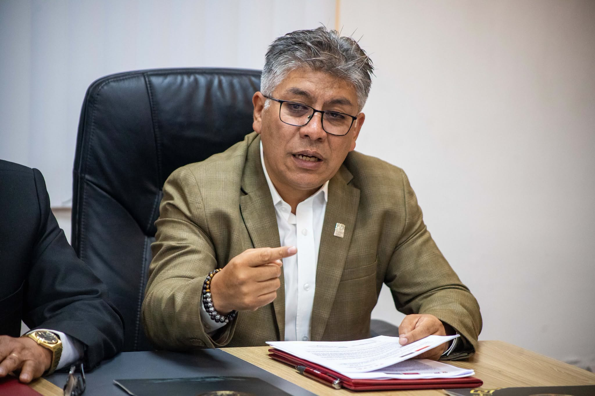
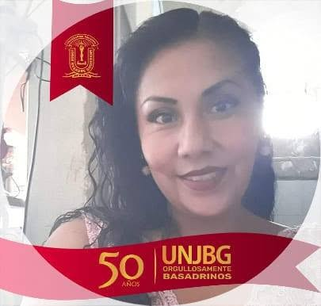

Conoce Quiénes Somos
Historia, principios fundamentales y el equipo humano que guía el destino de nuestra institución.
Historia de la I.E. Gerardo Arias Copaja
La Institución Educativa Pública N° 42253 "Gerardo Arias Copaja" ha sido un pilar fundamental en la formación académica y ciudadana en la heroica ciudad de Tacna. A lo largo de los años, nuestras aulas han visto crecer a generaciones de estudiantes que hoy en día sirven con orgullo a la sociedad.
Fundada con el firme propósito de democratizar la educación de calidad, nuestra escuela sigue evolucionando en infraestructura y metodologías pedagógicas, manteniendo siempre firmes los valores cívicos y patrióticos que caracterizan a la región de Tacna.
Filosofía Institucional
Los principios que guían nuestro compromiso diario
Nuestra Misión
Somos una institución educativa que busca la formación integral, inclusiva, intercultural y ética de los (as) estudiantes; integrándonos a la tecnología con proyectos que promuevan la práctica de estilos de vida saludable, fomentando el cuidado del medio ambiente; comprometidos al desarrollo de una sociedad justa y democrática.
Nuestra Visión
Nuestra institución educativa Gerardo Arias Copaja es líder en la formación integral, inclusiva e intercultural de niños, niñas y adolescentes, garantizando una educación de calidad, basada en la práctica de valores, habilidades y capacidades compatibles con los avances científicos, tecnológicos y con cultura ecológica para contribuir al desarrollo de una sociedad con equidad.
Equipo Directivo y Administrativo
Liderazgo y compromiso al servicio de la comunidad educativa

Eberth Catunta Olivera
Director GeneralEjerce la representación legal y la máxima autoridad pedagógica y administrativa de la institución.

Agustín Anquise Choquecota
Subdirector de PrimariaEncargado estrictamente del monitoreo pedagógico y el acompañamiento formativo de los niños de entre 6 y 11 años, así como de coordinar las secciones del turno mañana y tarde.

Luz Marina Roque Ramíre
Subdirectora de SecundariaOrientado fuertemente a la disciplina escolar, la tutoría contra problemáticas sociales y la gestión del rendimiento académico de cara a la educación superior.